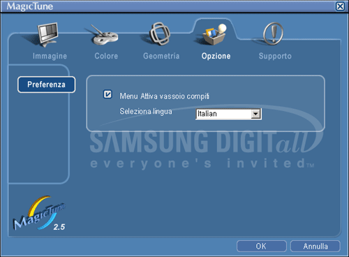

|

|
 |
MagicTune consente la precisa e veloce regolazione del monitor con la possibilità di salvare e utilizzare facilmente le configurazioni che meglio si adattano a ciascun utente.
- A seconda delle specifiche tecniche dei vari monitor è possibile che i menu a schermo OSD siano leggermente diversi da quanto citato nel manuale.
|
|
|
La modalità OSD rende semplicissima la
regolazione delle impostazioni di tutti i monitor.Quando selezionata, ogni scheda sopra alla finestra di
controllo visualizza le descrizioni generali delle voci dei sottomenu per le
regolazioni.Una volta selezionata una scheda, viene visualizzato un
elenco di menu.Per una rapida
regolazione delle impostazioni del monitor, la modalità OSD consente di
accedere comodamente a tutte le schede e alle voci dei sottomenu.
|
OK
|
Applica tutte le
modifiche apportate e chiude MagicTune.
|
|
Ripristina
|
Reimposta i valori
del monitor visualizzati nella finestra di controllo attiva ai valori
predefiniti del produttore.
|
|
Annulla
|
Chiude MagicTune
senza applicare le modifiche apportate.Se non sono
state eseguite modifiche nella finestra di controllo, la pressione del
pulsante non esegue alcuna azione.
|
Consente
all’utente di regolare le impostazioni dello schermo ai valori desiderati.
|
Luminosità
|
Rende l'intero schermo più chiaro o più scuro.I dati dettagliati delle immagini nelle aree scure
possono essere persi se la luminosità non viene regolata al giusto livello.Regolare la
luminosità per le migliori condizioni di visualizzazione.
|
|
Contrasto
|
Regola la differenza di luminosità tra le aree
chiare e le aree scure dello schermo.Determina la
vivacità delle immagini.
|
|
MagicBright™
|
Premere nuovamente il pulsante MagicBright e selezionare la modalità desiderata. - quattro diverse modalità:
- Testo : Per documenti o lavori che prevedono l'uso frequente di testo.
- Internet : Per lavori che prevedono un misto di testo e grafica.
- Gioco : Per la visione di film e immagini in movimento, come ad esempio videogame.
- Intrattenimento : Per la visione di film e immagini in movimento, come ad esempio DVD o VCD.
- Testo : Per documenti o lavori che prevedono l'uso frequente di testo.
- Internet : Per lavori che prevedono un misto di testo e grafica.
- Intrattenimento : Per la visione di film e immagini in movimento, come ad esempio DVD o VCD.
- Personalizzato : Sebbene tali valori preimpostati sono stati scelti con cura dagli ingegneri, essi potrebbero non risultare comodi per le preferenze dell'utente.In questo caso, regolare Brightness (luminosità) e Contrast (contrasto) utilizzando il menu OSD.
|
Regola la "temperatura" dello sfondo del monitor o dei colori dell'immagine.
|
Tono colore
|
È possibile
modificare la tonalità dei colori.
- Caldo - Normale - Freddo
- Personalizzato
|
|
Controllo colore
|
Regola i colori dell'immagine del monitor.
È possibile
cambiare il colore del monitor secondo sulla base delle proprie preferenze.
|
Regola i valori di Posizione, Dimensioni e Rotazione.
|
Geometria 1
|
Regolare i valori di Posizione, Dimensioni e Rotazione values.
- Posizione
- Dimensioni
- Rotazione
|
|
Geometria 2
|
Regolare i valori di Pincushion, Pinbalance, Trapezio e Parallelo.
- Pincushion
- Pinbalance
- Trapezio
- Parallelo
|
|
Altro
|
Regolare i valori Moire, Degauss, Sidepin angolo, Pinbalance angolo.
- Moire
- Degauss
- Sidepin angolo in basso
- Sidepin angolo in alto
- Pinbalance angolo in alto
- Pinbalance angolo in basso
|
È possibile configurare MagicTune utilizzando le seguenti opzioni.

|
Preferenza
|
Carica la finestra delle preferenze.Le preferenze attive presentano una casella di
controllo con un segno di spunta "V".Per attivare/disattivare una preferenza,
posizionare il cursore sulla casella e fare clic.
- Menu
Attiva vassoio compiti.- Per accedere ai menu di MagicTune,
fare clic sull'icona nel [menu della barra delle applicazioni].I menu non vengono visualizzati se l'opzione
[Menu Attiva vassoio compiti] (attiva menu barra delle applicazioni) è deselezionata
in [Options] (opzioni), [Basic Settings] (impostazioni di base).
- Seleziona lingua - La lingua selezionata viene
utilizzata solo per le funzioni del menu a schermo (OSD)
|
Mostra l'Asset ID e il numero di versione del programma, e consente di utilizzare la funzione di guida.

|
Guida
|
Visitare il sito Web di MagicTune oppure fare clic per aprire i file della guida (manuale dell'utente) se occorre aiuto nell'installazione o nell'esecuzione di MagicTune.Il manuale
dell'utente viene aperto in una finestra del browser.
|
|
Id risorse
|
Apre una finestra che mostra le informazioni del monitor, tra cui la data di produzione.
|
|
Versione
|
Visualizza il numero di versione di MagicTune.
|
|

 Modalità OSD
Modalità OSD